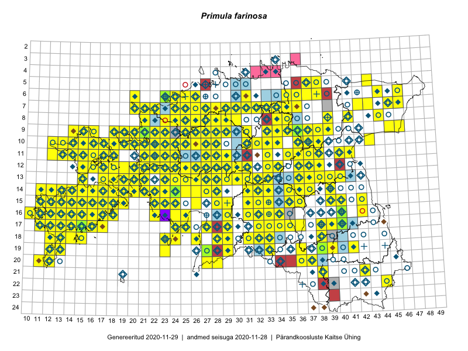

Primula farinosa
Uuendatud: 2016-12-01
Kaardile koondatud taksonid: Primula farinosa L.

Kaart põhineb 443 kirjel.
Kuvatud viited 20 esimesele andmebaasikirjele, ülejäänud PlutoFis
- Tiit Hallikma, Toomas Kukk, Indrek Tammekänd: 2015-06-09: 12-28: ala
- Peedu Saar: 2015-05-14: 10-43: ala
- Peedu Saar, Liina Oja: 2015-05-21: 16-25: ala
- Peedu Saar, Liina Oja: 2015-05-20: 18-26: ala
- Peedu Saar, Toomas Kukk: 2015-05-28: 11-17: ala
- Peedu Saar, Toomas Kukk: 2015-05-28: 10-15: ala
- Peedu Saar, Toomas Kukk: 2015-05-27: 09-14: ala
- Peedu Saar, Toomas Kukk: 2015-05-27: 09-15: ala
- Peedu Saar, Toomas Kukk: 2015-05-27: 09-16: ala
- Toomas Kukk, Eerik Leibak: 2015-08-09: 14-15: ala
- Toomas Kukk, Peedu Saar: 2015-08-05: 20-11: ala
- Toomas Kukk, Eerik Leibak: 2015-08-12: 10-17: ala
- Toomas Kukk, Eerik Leibak: 2015-08-10: 09-14: ala
- Peedu Saar, Toomas Kukk: 2015-05-26: 10-16: ala
- Peedu Saar, Toomas Kukk: 2015-05-26: 10-17: ala
- Tiit Hallikma, Indrek Tammekänd, Toomas Kukk: 2015-06-09: 12-29: ala
- Ott Luuk, Jaak-Albert Metsoja: 2015-05-27: 15-23: ala
- Ott Luuk, Jaak-Albert Metsoja: 2015-05-27: 12-22: ala
- Ott Luuk, Peedu Saar: 2015-07-27: 11-35: ala
- Ott Luuk: 2015-06-28: 13-26: ala